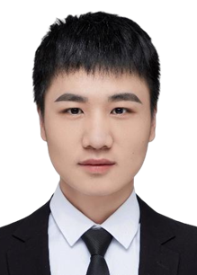

Partners
Ting Han (韩汀)
Sun Yat-sen UniversityHis research interests focus on advancing geospatial artificial intelligence by integrating deep learning theories and methods into 3D point cloud processing for remote sensing applications. He aims to develop interpretable and generalizable AI models that analyze urban morphology, vegetation structure, and built environments from multi-source geospatial data, emphasizing the synergy of spatial cognition and data-driven intelligence for sustainable urban analytics.
Yang Luo (罗阳)
Sun Yat-sen UniversityHis research interests focus on advancing domain adaptation methodologies by integrating transfer learning and deep learning theories into 3D point cloud processing for remote sensing applications. He aims to develop robust and generalizable models that bridge the domain gap across different sensors, acquisition conditions, and scene types, addressing domain shift challenges in point cloud understanding from multi-source remote sensing data, emphasizing the synergy of domain-invariant feature learning and adaptive model architectures for effective cross-domain knowledge transfer.

Chaolei Wang (王朝磊)
Sun Yat-sen UniversityHis research centers on leveraging 2D vision-language models to advance 3D scene understanding. This exploration has broadened his focus towards the construction of GeoAI foundation models for geospatial applications. He is driven by a passion for exploring how cutting-edge vision and language technologies can be applied to large-scale point clouds and remote sensing data.
Xiaobin Huang (黄晓彬)
Sun Yat-sen UniversityHis research focuses on two separate areas: (1) exploring and advancing 3D point cloud editing techniques through deep learning and interactive methods; and (2) developing intuitive tools for creating and manipulating high-quality 3D assets from multi-modal data, including semantic-aware editing, generative modeling, and geometric refinement with neural representations and user-centric design.